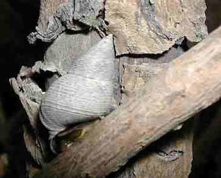
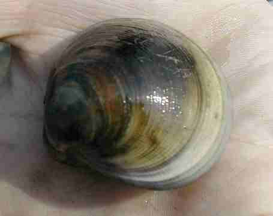

1、研究挖子尾生態保護區潮間帶的生物種類和特性
挖子尾潮間帶的生物，種類是淡水河口最多的地方，參考相關的書籍與資料，設計記錄的表格以便在觀察時便於記錄，記錄的內容有生物的特徵、生物的棲息地、生物的食性、生物的行為特性，分佈地區分別記錄。
1.常見的蟹類
|
||||
| 1.海和尚 | 2.台灣厚蟹 | 3.斯氏沙蟹 | 4.角眼沙蟹 | 5.黃螯招潮蟹 |
| 6.雙齒近相手蟹. | 7.角眼拜佛蟹 | 8.九齒青蟳 | 9.白扇招潮蟹 | 10.網紋招潮蟹 |
| 11.萬歲大眼蟹 | 12.鈍齒蟳 | 13.圓球股窗蟹 | 14.摺痕相手蟹 | 15.濱蟹 |
|
|
|||
| 16.紅點黎明蟹 | 17.台灣厚蟹 | 18神妙擬相手蟹 | 19藍色小蟹 | 20.不知明蟹1 |
|
|
|||
| 21.不知明蟹2 | 22.秀麗長方蟹 | 23.近方絨螯蟹 | 24.不知明蟹3 |
| 25.磯鷸 | 26.環頸行 | 27.小白鷺 | 28.小青足鷸 | 29.夜鷺 |
| 30.蒼鷺 |
3.貝類
|  |  |
 | ||
| 31.玉黍螺 | 32.燒酒螺 | 33.文蛤 | 34.赤嘴仔 | 35.西施舌 |
 |
||||
| 36.織紋螺 |
4.其他生物
 |
 |
|||
| 37.海蟑螂 | 38.藤壺 | 39.彈塗魚 | 40.蝦猴 | 41海虫 |
| 42海虫 |
5.潮間帶植物
| 43.水筆仔 | 44.蘆葦 | 45.鹽地鼠尾粟 | 46.苦林盤 | |